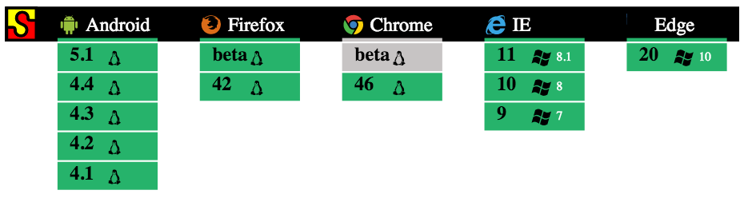

This presentation will cover:
Note: This presentation will only cover AngularJS v1.x Angular2 is currently in beta.
AngularJS is a frontend javascript framework released in 2009, maintained by Google, developed to address many of the challenges encountered in developing single-page web applications.
It lends itself to both MVC (Model-View-Controller) and MVVM (Model-View-ViewModel) architectures.
It is built from the ground up, without a large dependency chain. (Does not require jquery)

Angular 1.3+ dropped explicit support for IE8.
Angular2.x will have the same browser support.
One of the core features of angular is two-way-data-binding. It allows you bind data in a view/template to a controller.
Directives are markers that allow developers to tie functionality to HTML.
Can be an attribute, a class, or an element.
Components are a subset of directives that include a template and their own scope.
Services are the data layer of AngularJS.
Bake-off between:
on the Following Criteria:
| Framework | Pros | Cons |
|---|---|---|
| BackboneJS |
|
|
| AngularJS |
|
|
| EmberJS |
|
|
| React/Redux |
|
|
A list of metrics since we have moved to angular:
We have adopted the following structure for our MyAccount.
app/
- config/
- routes.js
- interceptors.js
- constants/
- events.js
- states.js
- controllers/
- globalController.js
...
- directives/
- directive-name/
- directive.js
- directive-template.html
...
- filters/
...
- services/
...
- templates/
...
- app.jsWe adopted a GlobalController Pattern that sits at the very top level of our application.
Since all controllers inside of it will inherit $scope from it, it allows us a single layer
to handle data and application state.